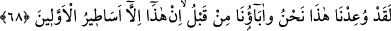
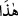
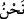
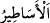
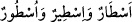
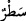
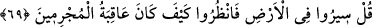

sonra, gerçekten” mezarlarımızdan “(diriltilip) çıkarılacak mıyız?” Yâni toprak
olduktan sonra kabirlerden çıkarılacak mıyız? Yâni bu olmaz.
“Gerçekten (diriltilip) çıkarılacak mıyız?” ifâdesi, onlara ve babalarına âiddir.
Çünkü onların toprak olmaları, hem kendilerini ve hem de babalarını içine alır.
Hemzenin tekrarlanması, inkâr konusunda mübâlağa içindir. Onların yeniden
diriltilmeyi inkârı, toprak oldukları vakitle sınırlamaları, inkârlarını çıkarılmaya ters
olan bir duruma yöneltmek sûretiyle güçlendirmek içindir. Yoksa onlar, ister toprak
olsunlar ister olmasınlar mutlak olarak öldükten sonra diriltilmeyi inkâr etmektedirler.
68. Andolsun ki, bu tehdit bize yapıldığı gibi, daha önce atalarımıza da yapılmıştır.
Bu, öncekilerin masallarından başka bir şey değildir.
“Andolsun ki, bu tehdid” topraktan diriltilip çıkarılma “bize yapıldığı gibi, daha
önce atalarımıza da yapılmıştır.” Yâni Muhammed’in tehdîdinden önce de geçmiş
zamanlarda atalarımız bu tehdîde mâruz kaldılar. Sonra ise diriltilmediler ve asla da
diriltilmeyecekler.
Âyette “__WORD__ (bu tehdîd)” ifâdesinin “__WORD__ (biz)” kelimesinin önüne alınması, burada
esas maksad tehdidi zikretmek olduğu içindir. Mü’minin sûresinde (23/83) ise te’hir
edilmişti. Çünkü orada maksad diriltilen kimselerdi.
“Bu,” tehdîd “öncekilerin masallarından” Rüstem ve İsfendiyar efsâneleri gibi daha
önce yaşamış olanların yazdıkları yalan yanlış haberler ve masallardan “başka bir şey
değildir.” Yoksa (bu haşir ve neşir), ancak geçmiş (ümmetlerin söyledikleri)
efsânelerdir. Yâni hakikatten uzak mücerred sözlerden ibâret efsâneler gibidir.
“__WORD__ hakikati ve belli bir düzeni olmayan haberler, masallar demektir. “__WORD__ kelimelerinin çoğuludur. Bu kelimeler ise satır, sıra, dizi anlamındaki
“__WORD__ kelimesinin çoğuludur.
69. De ki: Yeryüzünde gezin de, günahkârların âkıbeti nice oldu, görün!
Ey Muhammed! “De ki:” Ey münkirler ve yalanlayanlar, “Yeryüzünde gezin de,” Hicr,
Ahkâf, altüst olan şehirlerin (mü’tefikât) ve benzeri yalanlayan toplumların yaşadıkları
yerleri gezin “günahkârların âkıbeti” yalanlamaları sebebiyle çeşitli azâb şekilleriyle
helâk edilmek sûretiyle yalanlayanların işinin sonu “nice oldu, görün!”düşünün ve ibret
alın.
Burada, yalanlamalarına karşı onları tehdîd ve kendilerinden önce yalanlayanların
başlarına inen azâbın benzerinin onların da başlarına inmesiyle korkutma vardır.